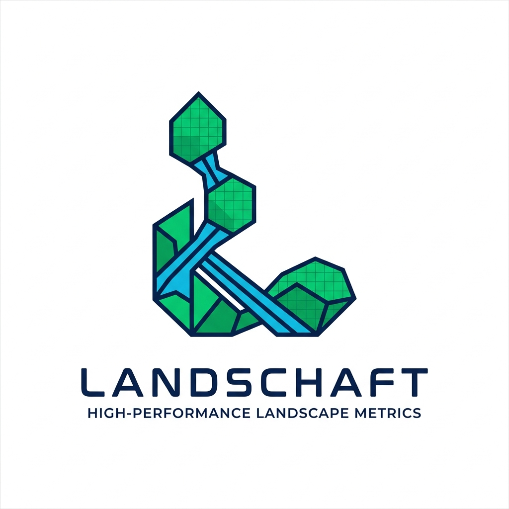
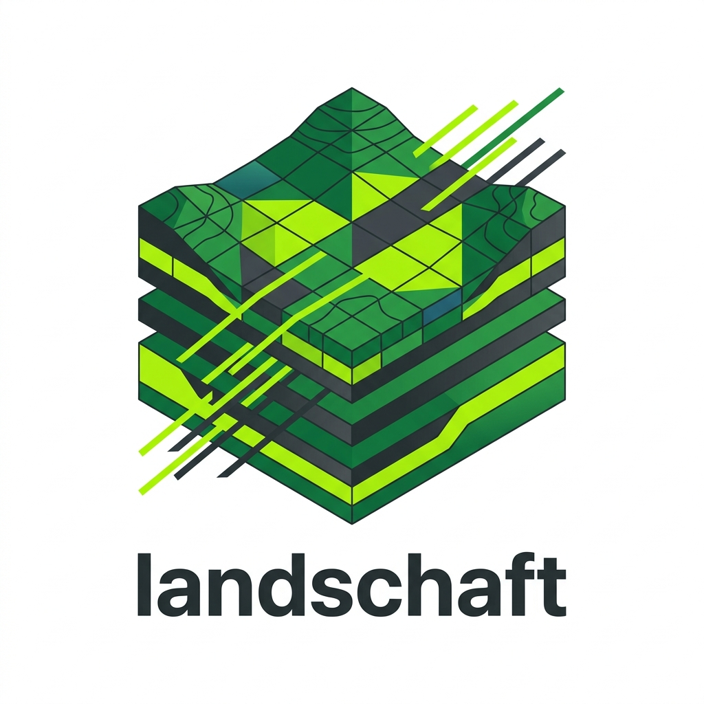
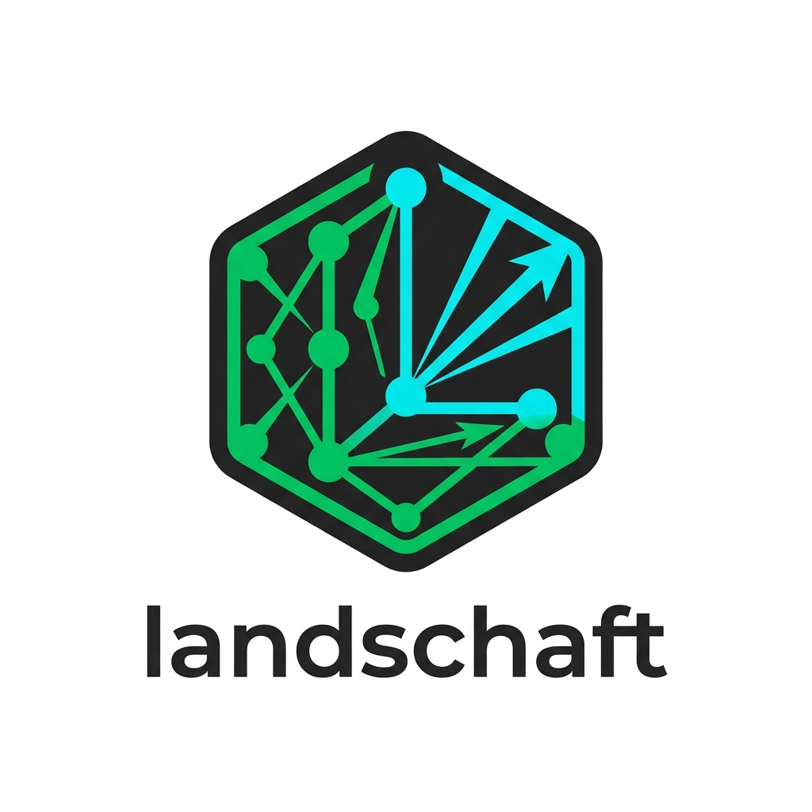
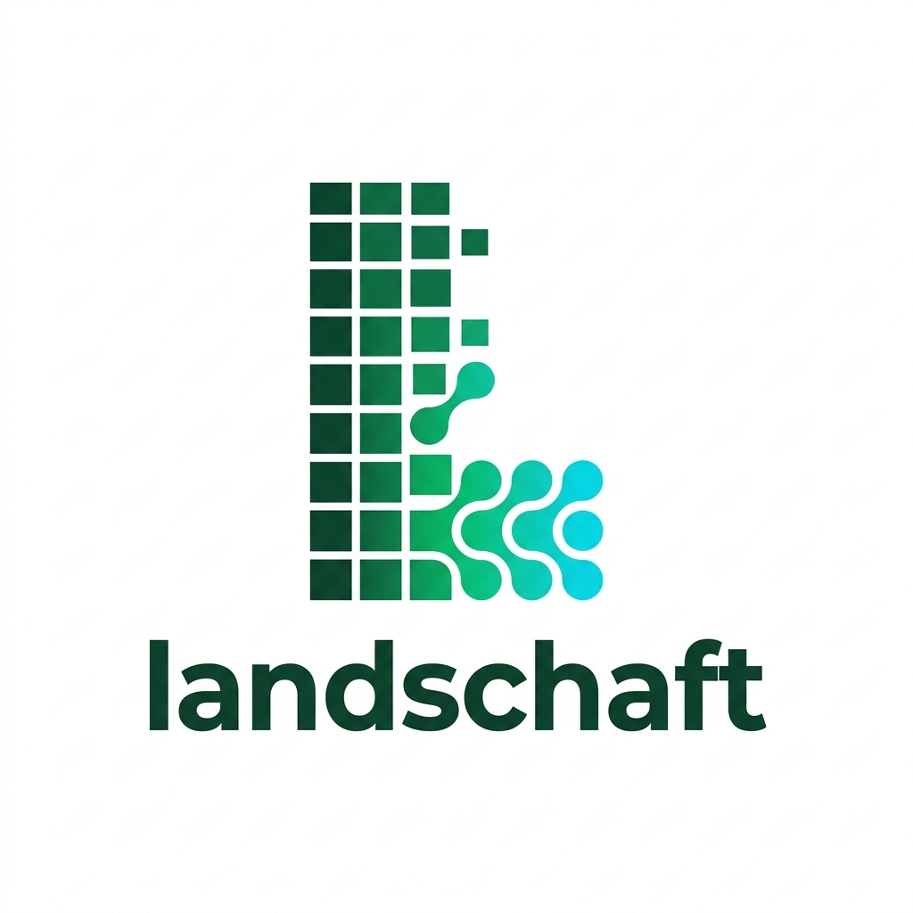

Propostas de logomarca unindo ecologia da paisagem, análise morfológica (MSPA), conectividade espacial e computação de alto desempenho.

Manchas verdes de habitat (núcleos florestais) interligadas por corredores estruturais que desenham a letra L. Evoca diretamente a morfologia espacial (MSPA/GuidosToolbox) e a conectividade de paisagem.

Um prisma 3D de terreno em camadas estratificadas e células raster, cortado por feixes de alta performance. Enfatiza a volumetria de dados espaciais (GeoTIFFs pesados, Dask, out-of-core).

Hexágono estilo app-badge com nós de habitat e vetores de menor custo (*least-cost paths*) formando o "L". Ideal para favicons, GitHub avatars e stickers de conferência científica.

Monograma "L" minimalista onde a grade de pixels raster rígidos se desfragmenta e se transforma em manchas biológicas contínuas na base. Extremamente limpo, no estilo NumPy/SciPy.